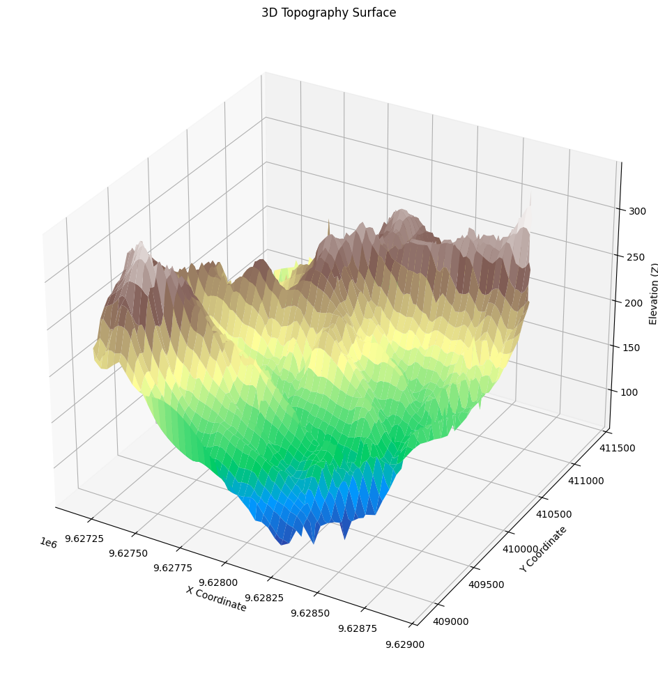
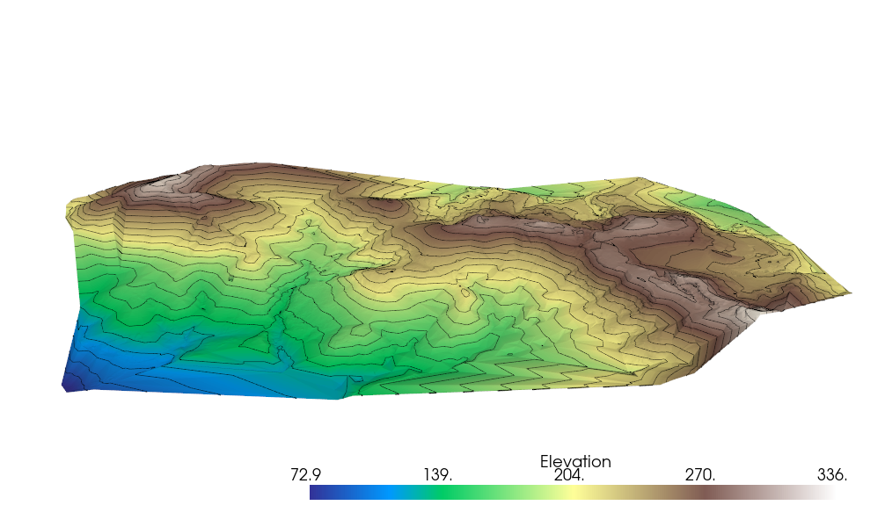

Membuat Topo dari Data Koordinat
Modul ini disusun untuk membantu dalam pengolahan data koordinat XYZ serta dapat diekspor kedalam format data GIS yang sering digunakan seperti .shp atau .tiff, berikut penjelasan yang cukup membingungkan dari salah satu AI yang memiliki akurasi model paling baik saat tulisan ini dibuat.
Bayangkan Anda memiliki peta kertas tua yang berisi titik-titik ketinggian di sebuah bukit. Anda ingin mengubahnya menjadi peta 3D yang keren, seperti yang ada di film fiksi ilmiah, dan juga menyimpannya dalam format yang bisa dibaca oleh aplikasi peta modern seperti Google Earth. Sintaks dalam file topo.ipynb ini seperti asisten setia Anda: ia membaca data titik-titik ketinggian dari file CSV, membuat visualisasi 3D yang bisa dilihat dari berbagai sudut, dan menyimpan hasilnya dalam bentuk file yang bisa digunakan di perangkat lunak peta profesional. Singkatnya, Sintaks ini membantu Anda "menghidupkan" data topografi menjadi gambar dan file yang berguna!
Penjelasan Sintaks Bagian per Bagian
1. Impor Library yang Dibutuhkan
Sintaks:
import pandas as pd
import numpy as np
import matplotlib.pyplot as plt
from mpl_toolkits.mplot3d import Axes3D
import pyvista as pv
from scipy.interpolate import griddata
import rasterio
from rasterio.transform import from_origin
import geopandas as gpd
from shapely.geometry import LineString
Tujuan:
Silahkan dibaca setiap bagian tujuan jika anda bisa memahami tujuan umum pada bagian awal, setiap penjelasan pada modul ini di generate menggunakan AI, jika menurut anda penjelasan tersebut tidak sesuai, silahkan fokus pada blok code dan bagaimana seharusnya luaran dari Sintaks tersebut.
Ini seperti mengumpulkan semua alat yang Anda butuhkan sebelum memulai proyek seni. Misalnya, Anda membutuhkan pensil (pandas untuk membaca data), kalkulator (numpy untuk perhitungan), kanvas dan cat (matplotlib dan pyvista untuk menggambar), serta kotak penyimpanan khusus (rasterio dan geopandas untuk menyimpan hasil).
Simmiliar Function:
- Untuk membaca data: Bayangkan Anda membaca daftar belanja dari kertas biasa (modul
csv) atau dari spreadsheet Excel (modulopenpyxl). - Untuk interpolasi: Seperti menebak tinggi tanah di antara dua titik yang diketahui dengan kalkulator lain (
scipy.interpolate.interp2dataunumpy.interp). - Untuk visualisasi: Seperti menggunakan aplikasi desain interaktif (plotly) atau alat lukis 3D canggih (mayavi, vtk).
- Untuk menyimpan: Seperti menggunakan kotak arsip lain (fiona, gdal) atau mengedit foto sebelum menyimpan (PIL).
Output:
Tidak ada gambar atau file yang muncul di sini, hanya persiapan alat untuk langkah berikutnya.
2. Mengimpor Data (dalam modul ini menggunakan data .CSV)
Sintaks:
data = pd.read_csv('topo_ex3.csv', header=None)
data.columns = ['X', 'Y', 'Z', 'I', 'J']
x = data['X'].values
y = data['Y'].values
z = data['Z'].values
print(data.head())
Tujuan:
Bayangkan Anda membuka buku catatan tua yang penuh dengan titik-titik koordinat X, Y, dan ketinggian Z dari sebuah bukit. Sintaks ini seperti asisten yang membaca buku itu, memberi label pada setiap kolom (X untuk posisi timur-barat, Y untuk utara-selatan, Z untuk ketinggian), dan menyiapkan datanya untuk Anda gunakan lebih lanjut.
Simmiliar Function:
- Anda bisa membaca buku itu secara manual dengan tangan (modul
csv) atau menggunakan alat sederhana untuk membaca file teks (numpy.loadtxt).
Metode dan Fungsi lain yang dapat digunakan:
# Menggunakan numpy.loadtxt
import numpy as np
data = np.loadtxt('topo_ex3.csv', delimiter=',') # Asumsi tidak ada header
x, y, z = data[:, 0], data[:, 1], data[:, 2]
print(data[:5]) # Tampilkan 5 baris pertama
Anda akan melihat daftar kecil dari data, seperti melihat 5 baris pertama dari buku catatan:
X Y Z I J
0 9628389.460 410687.142 290.976 NaN NaN
1 9628491.658 410758.041 299.953 NaN NaN
2 9628213.287 409755.982 164.825 NaN NaN
3 9628213.287 409755.982 164.825 NaN NaN
4 9628756.121 410610.314 230.739 NaN NaN
3. Visualisasi 3D dengan Matplotlib
Sintaks:
x, y, z = data["X"], data["Y"], data["Z"]
grid_x, grid_y = np.meshgrid(
np.linspace(x.min(), x.max(), 100),
np.linspace(y.min(), y.max(), 100)
)
grid_z = griddata((x, y), z, (grid_x, grid_y), method="cubic")
fig = plt.figure(figsize=(16, 12))
ax = fig.add_subplot(111, projection="3d")
ax.plot_surface(grid_x, grid_y, grid_z, cmap="terrain", edgecolor="none")
ax.set_xlabel("X Coordinate")
ax.set_ylabel("Y Coordinate")
ax.set_zlabel("Elevation (Z)")
ax.set_title("3D Topography Surface")
plt.show()
Tujuan:
Ini seperti menggambar peta 3D sederhana dari bukit Anda di atas kertas. Sintaks ini mengambil titik-titik ketinggian, membuat "jaring" halus di antara titik-titik itu (seperti menarik garis halus di antara titik-titik), lalu menampilkan gambar 3D yang bisa Anda lihat di layar.
Simmiliar Function:
- Anda bisa menggunakan aplikasi interaktif seperti peta digital di ponsel (plotly).
- Atau alat lukis 3D yang lebih canggih seperti di studio animasi (mayavi).
Metode dan Fungsi lain yang dapat digunakan:
# Menggunakan Plotly untuk visualisasi interaktif
import plotly.graph_objects as go
fig = go.Figure(data=[go.Surface(z=grid_z, x=grid_x, y=grid_y)])
fig.update_layout(title='Peta Bukit 3D', scene=dict(xaxis_title='X', yaxis_title='Y', zaxis_title='Ketinggian'))
fig.show()
Anda akan melihat gambar peta 3D statis di layar, seperti lukisan bukit dengan warna yang menunjukkan ketinggian, lengkap dengan label sumbu X, Y, dan Z.

4. Visualisasi 3D dengan Pyvista
Sintaks:
points = np.c_[data["X"], data["Y"], data["Z"]]
point_cloud = pv.PolyData(points)
surf = point_cloud.delaunay_2d()
surf["Elevation"] = surf.points[:, 2]
contours = surf.contour(isosurfaces=25)
plotter = pv.Plotter()
plotter.add_mesh(surf, cmap="terrain", show_edges=False)
plotter.add_mesh(contours, color="black", line_width=1.5)
plotter.show()
Tujuan:
Bayangkan Anda membuat model bukit 3D dari plastisin yang bisa Anda putar dan lihat dari semua sudut, lengkap dengan garis-garis ketinggian seperti di peta topografi. Sintaks ini membuat visualisasi interaktif yang lebih hidup dibandingkan Matplotlib.
Simmiliar Function:
- Anda bisa menggunakan alat 3D profesional seperti di studio film (vtk).
- Atau alat untuk membuat model 3D dari titik-titik (trimesh).
Metode dan Fungsi lain yang dapat digunakan:
# Menggunakan VTK (sederhana)
import vtk
points = vtk.vtkPoints()
for i in range(len(x)):
points.InsertNextPoint(x[i], y[i], z[i])
polydata = vtk.vtkPolyData()
polydata.SetPoints(points)
delaunay = vtk.vtkDelaunay2D()
delaunay.SetInputData(polydata)
delaunay.Update()
# Tambahkan Sintaks visualisasi lebih lanjut untuk menampilkan
Jendela interaktif akan muncul, menampilkan bukit 3D yang bisa Anda putar, perbesar, dan lihat garis kontur hitam yang menunjukkan ketinggian.

5. Ekspor Kontur ke Shapefile
Sintaks:
contours = surf.contour(isosurfaces=10)
lines = [LineString(contours.points[contours.lines[i+1:i+1+contours.lines[i]]])
for i in range(0, len(contours.lines), contours.lines[0]+1)]
gdf = gpd.GeoDataFrame(geometry=lines, crs="EPSG:4326")
gdf.to_file("contours.shp")
print("Contours exported as Shapefile: contours.shp")
Tujuan:
Ini seperti mengambil garis-garis ketinggian dari peta Anda dan menyimpannya ke dalam file yang bisa dibuka di aplikasi peta profesional (seperti QGIS). File ini berisi garis-garis kontur yang menunjukkan ketinggian tertentu di bukit Anda.
Simmiliar Function:
- Anda bisa menulis garis-garis itu secara manual ke file seperti menulis di buku (fiona).
- Atau hanya membuat bentuk garis tanpa menyimpan langsung (shapely).
Metode dan Fungsi lain yang dapat digunakan:
# Menggunakan Fiona
import fiona
from shapely.geometry import mapping
schema = {'geometry': 'LineString', 'properties': {}}
with fiona.open('kontur_manual.shp', 'w', 'ESRI Shapefile', schema, crs='EPSG:4326') as c:
for line in lines:
c.write({'geometry': mapping(line), 'properties': {}})
print("Garis kontur disimpan dengan Fiona")
File bernama contours.shp akan dibuat di folder Anda, yang bisa dibuka di aplikasi seperti QGIS, dan Anda akan melihat pesan: Contours exported as Shapefile: contours.shp.
6. Ekspor Surface kedalam file GeoTIFF
Sintaks:
points = surf.points
x, y, z = points[:, 0], points[:, 1], points[:, 2]
grid_size = 100
xi = np.linspace(min(x), max(x), grid_size)
yi = np.linspace(min(y), max(y), grid_size)
X, Y = np.meshgrid(xi, yi)
Z = np.interp(X.ravel(), x, z).reshape(grid_size, grid_size)
transform = from_origin(min(x), max(y), (max(x)-min(x))/grid_size, (max(y)-min(y))/grid_size)
with rasterio.open("topography.tif", "w", driver="GTiff", height=Z.shape[0], width=Z.shape[1],
count=1, dtype=Z.dtype, crs="EPSG:4326", transform=transform) as dst:
dst.write(Z, 1)
print("Surface exported as GeoTIFF: topography.tif")
Tujuan:
Bayangkan Anda mengambil foto udara dari bukit Anda dan menyimpannya dalam format gambar khusus yang bisa dibaca oleh aplikasi peta. Sintaks ini membuat file gambar yang menunjukkan ketinggian di setiap titik di bukit Anda.
Simmiliar Function:
- Anda bisa menggunakan alat khusus untuk membuat gambar peta (gdal).
- Atau mengedit gambar terlebih dahulu seperti di aplikasi foto (PIL).
Metode dan Fungsi lain yang dapat digunakan:
# Menggunakan GDAL
from osgeo import gdal
driver = gdal.GetDriverByName('GTiff')
dataset = driver.Create('foto_bukit.tif', 100, 100, 1, gdal.GDT_Float32)
dataset.SetGeoTransform((min(x), (max(x)-min(x))/100, 0, max(y), 0, -(max(y)-min(y))/100))
dataset.SetProjection('EPSG:4326')
dataset.GetRasterBand(1).WriteArray(Z)
dataset.FlushCache()
print("Foto bukit disimpan dengan GDAL")
File bernama topography.tif akan dibuat, yang bisa dibuka di aplikasi seperti QGIS untuk melihat peta ketinggian, dan Anda akan melihat pesan: Surface exported as GeoTIFF: topography.tif.
Kesimpulan
Modul ini seperti panduan untuk mengubah catatan ketinggian bukit Anda menjadi peta 3D yang menarik. Anda bisa melihatnya sebagai gambar sederhana (Matplotlib), model interaktif (Pyvista), atau menyimpannya sebagai file peta (Shapefile dan GeoTIFF) untuk digunakan di aplikasi profesional. Dengan Simmiliar Function, Anda bisa menyesuaikan cara membaca data, menggambar, atau menyimpan sesuai kebutuhan Anda. Semoga cerita dan analogi ini membantu Anda memahami Sintaks dengan lebih mudah dan menyenangkan! Jika ada yang ingin diperjelas lagi, silakan beri tahu saya.